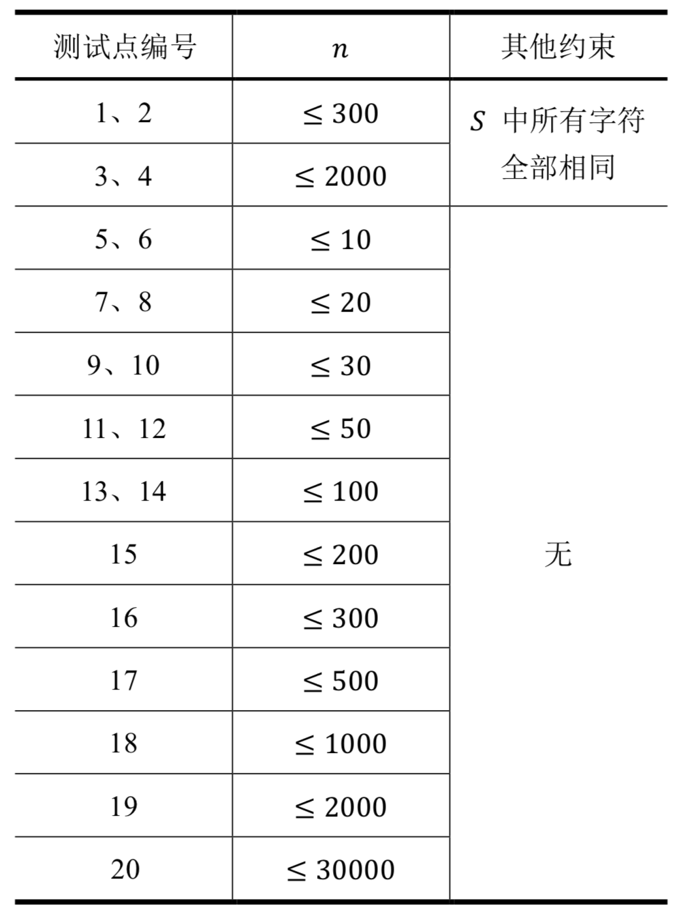

【样例1说明】
我们用$𝑆[𝑖,𝑗]$表示字符串$𝑆$第$𝑖$个字符到第$j$个字符的子串（从1开
始计数）。
第一组数据中，共有3个子串存在优秀的拆分：
𝑆[1,4] =aabb，优秀的拆分为𝐴 =a，𝐵 =b；
𝑆[3,6] =bbbb，优秀的拆分为𝐴 =b，𝐵 =b；
𝑆[1,6] =aabbbb，优秀的拆分为𝐴 =a，𝐵 =bb。
而剩下的子串不存在优秀的拆分，所以第一组数据的答案是3。
第二组数据中，有两类，总共4个子串存在优秀的拆分：
对于子串𝑆[1,4] = 𝑆[2,5] = 𝑆[3,6] =cccc，它们优秀的拆分相同，均为𝐴 =c，𝐵 =c，但由于这些子串位置不同，因此要计算3次；
对于子串𝑆[1,6] =cccccc，它优秀的拆分有2种：𝐴 =c，𝐵 =cc和𝐴 =cc，𝐵 =c，它们是相同子串的不同拆分，也都要计入答案。
所以第二组数据的答案是3 + 2 = 5。
第三组数据中，𝑆[1,8]和𝑆[4,11]各有2种优秀的拆分，其中𝑆[1,8]是问题描述中的例子，所以答案是2 + 2 = 4。
第四组数据中，𝑆[1,4]，𝑆[6,11]，𝑆[7,12]，𝑆[2,11]，𝑆[1,8]各有1种优秀的拆分，𝑆[3,14]有2种优秀的拆分，所以答案是5 + 2 = 7。
【子任务】
对于全部的测试点，保证$1 ≤ 𝑇 ≤ 10$。以下对数据的限制均是对于单组输入数据而言的，也就是说同一个测试点下的$𝑇$组数据均满足限制条件。
我们假定$𝑛$为字符串$𝑆$的长度，每个测试点的详细数据范围见下表：

 Comet OJ
Comet OJ